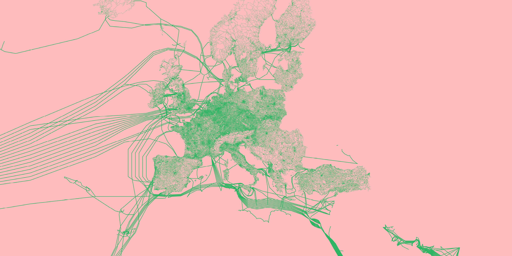
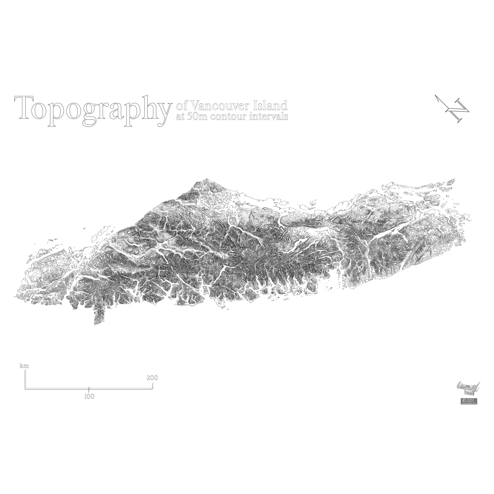
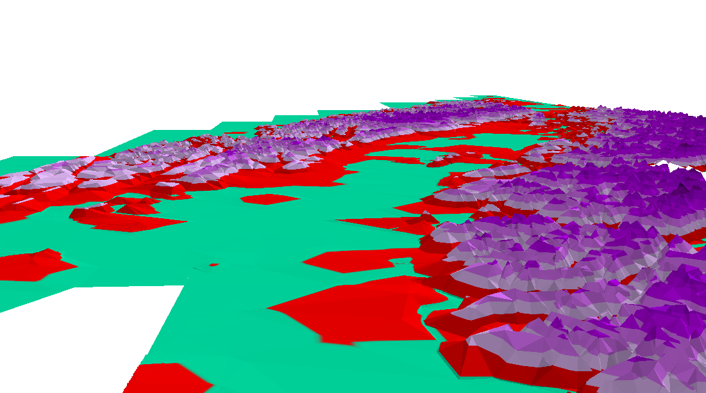

1
A0 - $380CAD

2
A0 $360CAD

3
3d-printed island [WIP]

4
Doloribus quo alias reprehenderit

5
Reprehenderit
a student in space • cringe / based ☯
This thesis operates at the intersection of spatial practice and digital rights, realizing a critical appraisal and response to the foundations that are currently being laid for spatial datafication. | It is happening now | The succeeding motions arrive in a light of proactivity against technocratic logics seeking to monopolize the powerful entanglements implicated by spatial data. A fragile moment of duality is framed and confronted; innovative instruments of process and impact-attribution provide invaluable promise to consciously mitigate irreversible biosphere destruction brought on by transnational expansion. This considered, over-metricizing layers of the human life most often tends to signal infringements on individual autonomy, provoking narratives that regard space as an object of systematization. This contentious duality is embraced as a design cue, and developed are structured visions of unitary interlope, in which the spatial practitioner holds a momentous bottleneck of diverse network flows through novel enactments of distributed computing to maintain spatial data as something of common benefit, rather than a platform for corporate absolutism.